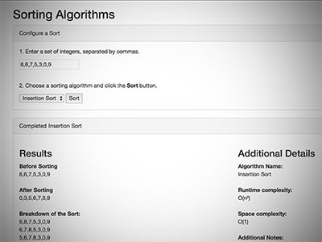
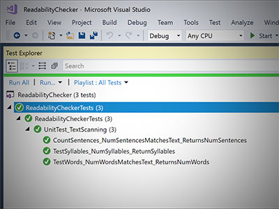
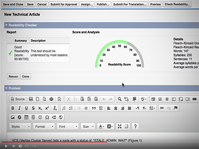
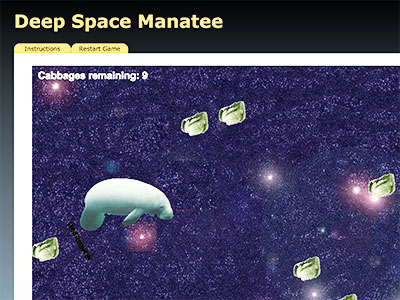

Projects
Sorting Algorithms with ASP.NET Core MVC
This is a live web app that allows you to enter a set of numbers, choose from several different sorting algorithms, and view the results. It was built with ASP.NET Core MVC on Ubuntu.
Readability Checker with C#
This program performs a readability analysis by scanning the text and counting the number of words, syllables, sentences, and other items. It calculates a Flesch-Kincaid score, grade level, statistics, and brief suggestions for improving readability.
Unit Tests for Readability Checker with C#
These are unit tests for the Readability Checker with C#. They perform three simple unit tests to confirm that the scanner and tracker correctly count and record the number of sentences, words, and syllables.
Readability Checker with Java
This is a Java version of the Readability Checker. It works the same as the C# version, but it may produce slightly different results because of differences between the RegEx implementations and because the Java version uses an HTML editor.
Readability Checker with Salesforce Apex and Visualforce
Here's a Salesforce version of the readability checker, made with Apex and Visualforce.
Note: The example article shown in the video contains only public-facing content.
YouTubeTic-Tac-Toe with Swift and Cocoa
This is a simple, two-player, Tic-Tac-Toe game made with Swift and Cocoa for MacOS.
Video Game with Phaser
Here's a small game that I made as an undergrad using the Phaser framework. It's rather surreal and ridiculous -- you control a manatee flying through Outer Space, eating cabbages, using your arrow keys. The controls are a little wonky, and it's kind of a joke, but it was fun to make.
Play GameDungeons and Object Oriented Dragons with Java
Create a knight and fight monsters in the "Dungeon of Infinite Loops!" This is primarily an exercise in using common Object Oriented Design concepts such as abstract classes, interfaces, inheritance and composition.
Salesforce Battle with Apex and VisualForce
This is a silly "space battle" simulator. It is primarily a vehicle to experiment with DML and become more accustomed to designing programs where the state only lasts for as long as a single transaction.
GitMusic Curator Database Schema

This is a database schema that a songwriter, or a music production company, can use to keep track of lyrics, music, files, songs, releases, and credits. It was written in mySQL, but I created a simplified version with SQLite. I've attached the (rather lengthy, sorry) project log and overview in *.pdf, along with both DDL dumps in *.sql.
Lambdas with Scheme
Scheme is a Lisp-based language that was developed at MIT. It's useful for "functional programming" as opposed to the more-familiar "imperative programming."
GitCache Simulation with C++

This program simulates a memory cache based on a source file provided to it. It prints a report based on its activity.
GitAutomat - Mobile apps "made-to-order"

This is a brand identity for a fictional tech startup. "Automat” is named after a kind of fast food restaurant where the walls are filled with vending machine-like slots with ready-made meals. It’s not common in the USA anymore, but I think they are still found in other countries.
*.pdfLogo Design Proposals for GEDC
This is a set of logo design proposals for the Gainesville Economic Development Corporation. There are several variations of each logo, including a full-sized version, a "stacked" version and a black-and-white version.
*.pdfBasic Set Theory and Logic
Are you having difficulty sleeping?
Here's playlist of videos that I made for a Discrete Math course as an undergraduate. They cover basic set theory, logic, and other topics that will help even the most caffeinated minds "catch their z's."